APARTAT 01
Màquina virtual, instal·lació i particions
1. Crear la màquina virtual i seleccionar la ISO
En primer lloc, crearem una màquina virtual a VirtualBox. Li assignarem un nom i seleccionarem la imatge ISO de Windows, que haurem descarregat prèviament. És important desmarcar l'opció «Proceed with Unattended Installation» per poder fer la instal·lació manualment.
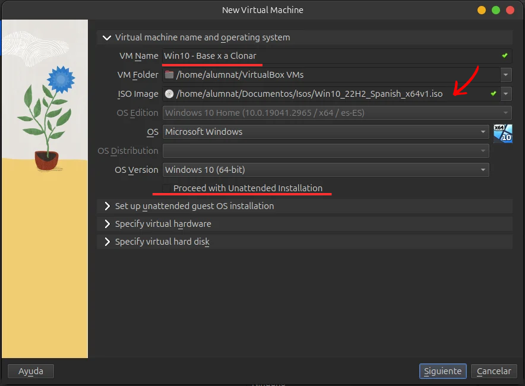
2. Assignar la memòria RAM i els processadors
A continuació, configurarem els recursos de maquinari de la màquina virtual. Hi assignarem 4 GB de memòria RAM i 2 processadors (CPU), tal com es mostra a la captura.
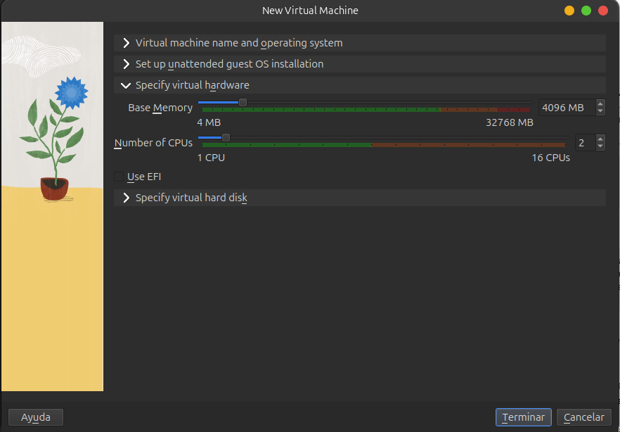
3. Assignar l'espai del disc virtual
Per continuar, assignarem 50 GB d'espai al disc dur virtual. Aquest serà l'espai màxim disponible per al disc de la màquina virtual.
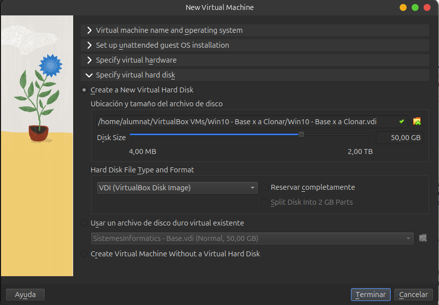
4. Comprovar la configuració de xarxa
Abans d'iniciar la màquina virtual, entrarem a la configuració i comprovarem que l'Adaptador 1 estigui habilitat i configurat en mode NAT. Aquesta configuració permet que Windows utilitzi la connexió a Internet de l'ordinador amfitrió.
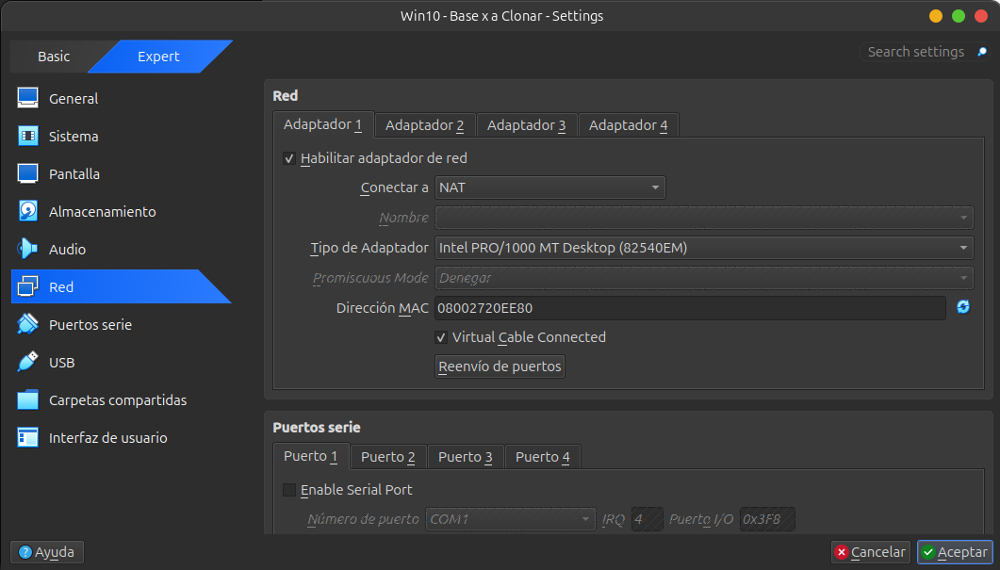
5. Crear la partició durant la instal·lació
Quan iniciem la instal·lació de Windows, arribarem a la pantalla de gestió de les particions del disc. Seleccionarem l'espai disponible i farem clic a «Nou». Hi indicarem una mida de 30 GB per crear la partició on s'instal·larà el sistema operatiu, i deixarem els 20 GB restants sense assignar per utilitzar-los posteriorment.
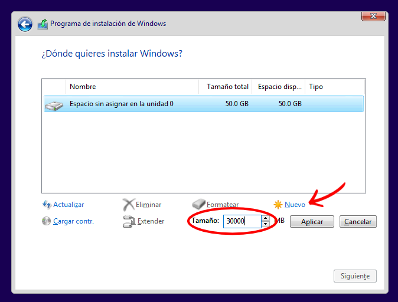
6. Comprovar el resultat de la partició
Després de crear-la, comprovarem que la partició de 30 GB aparegui a la llista i que quedi espai sense assignar al disc. Aquesta distribució ens permetrà crear una segona partició un cop Windows estigui instal·lat.
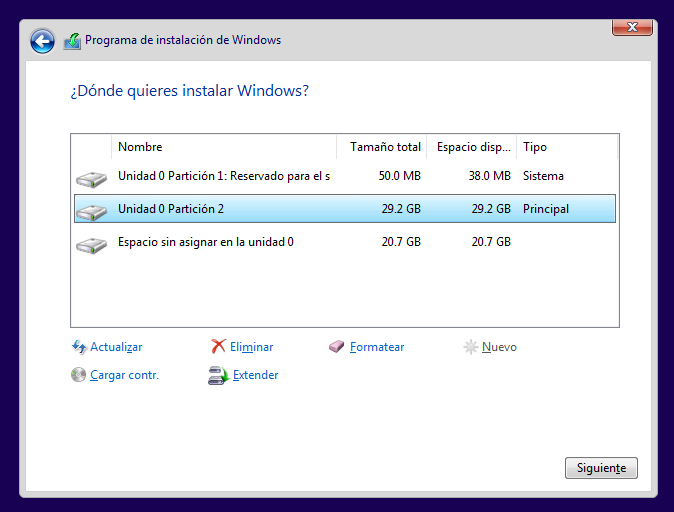
7. Obrir l'eina de gestió de discs
Un cop dins de Windows, obrirem la finestra Executar amb la combinació de tecles Windows + R. Hi escriurem diskmgmt.msc i premem Retorn per obrir l'eina de gestió de discs.
diskmgmt.mscA continuació, farem clic amb el botó dret sobre l'espai no assignat i seleccionarem «Nou volum simple» per iniciar l'assistent de creació de la partició.
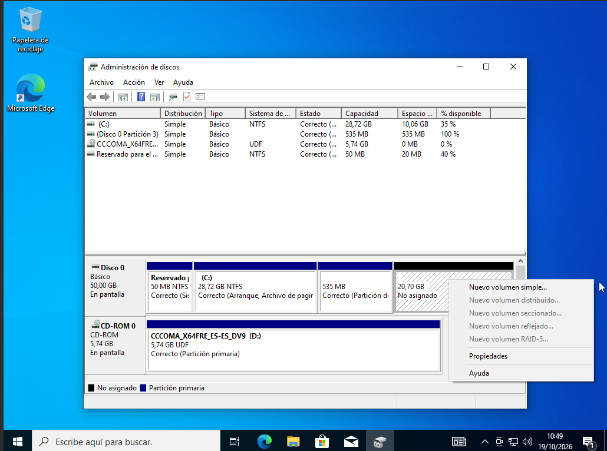
8. Assignar la lletra i l'etiqueta del volum
Durant l'assistent, assignarem la lletra d'unitat E: a la nova partició. També n'establirem l'etiqueta com a DADES, per identificar fàcilment que aquest volum està destinat a emmagatzemar fitxers personals.
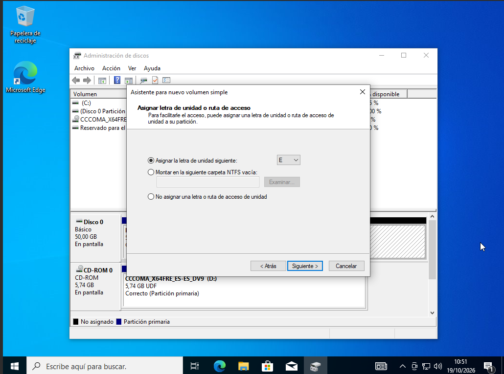
9. Comprovar la nova partició
Per acabar, comprovarem que la nova partició aparegui a la gestió de discs amb la lletra E: i l'etiqueta DADES. Així tindrem el sistema operatiu i les dades separats en dos volums.
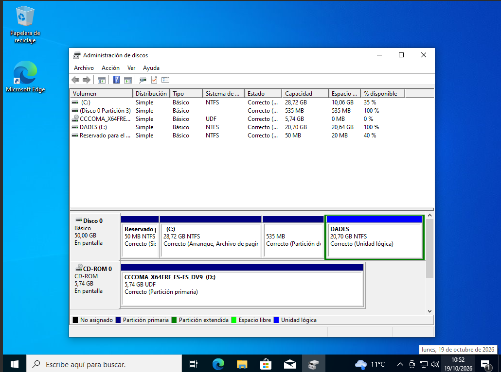
APARTAT 02
Llicències
1. Consultar l'estat d'activació de Windows
En primer lloc, comprovarem quina edició de Windows tenim instal·lada i si està activada. Per fer-ho, accedirem a Configuració → Actualització i seguretat → Activació. En aquesta pantalla podrem consultar l'estat de l'activació del sistema.
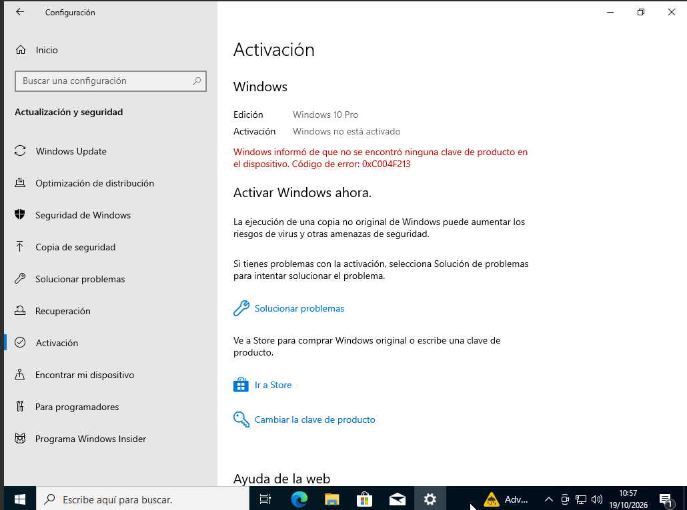
2. Consultar l'estat de la llicència amb PowerShell
Després, obrirem PowerShell i executarem la comanda següent per consultar si l'activació de Windows és permanent o si té una data de caducitat.
slmgr /xpr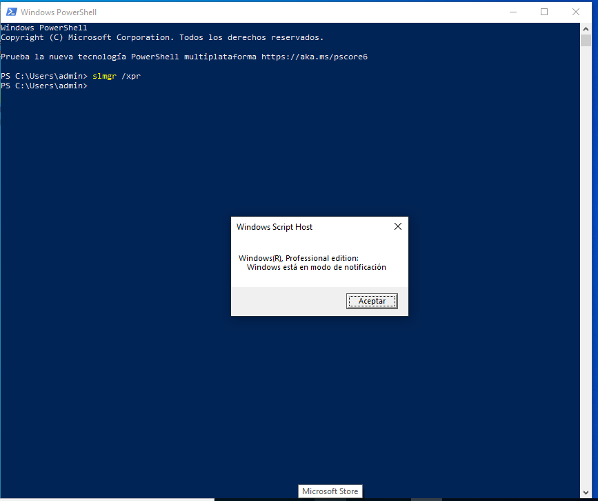
slmgr /xpr.3. Consultar la informació de la llicència
A continuació, executarem una segona comanda per consultar informació detallada sobre la llicència instal·lada, incloent-hi el canal o tipus de llicència que mostra el sistema.
slmgr /dli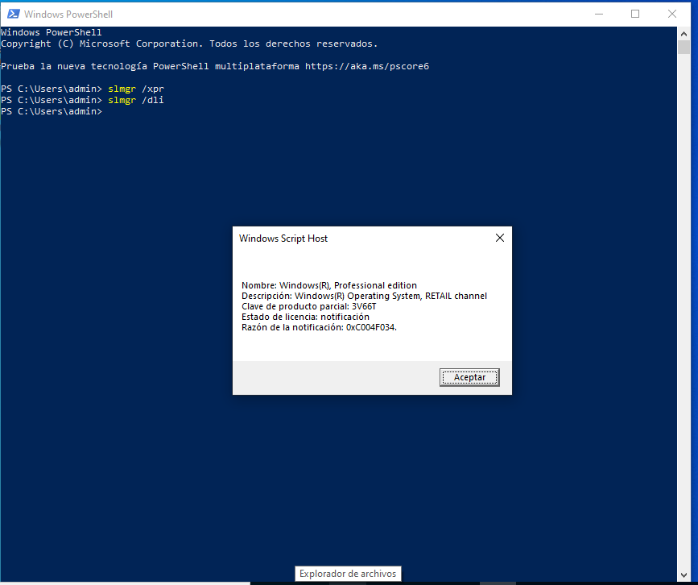
slmgr /dli.4. Consultar el preu de Windows 11 Home
Per comparar les edicions, accedirem a la botiga de Microsoft i cercarem Windows 11 Home. A la captura es mostra la informació del producte consultat.
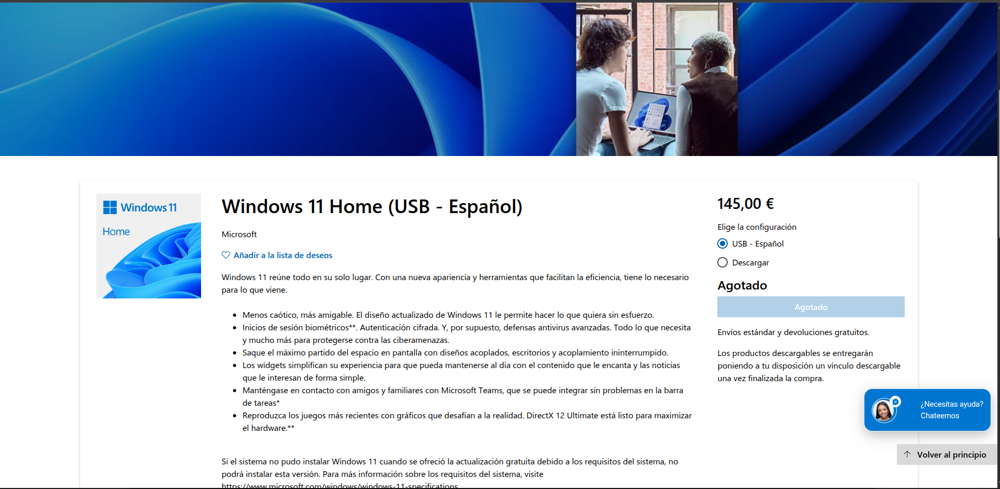
5. Consultar el preu de Windows 11 Pro
Farem la mateixa consulta per a Windows 11 Pro i observarem la informació i el preu que mostra la botiga. El preu pot variar segons la regió, les promocions i el tipus de llicència disponible.
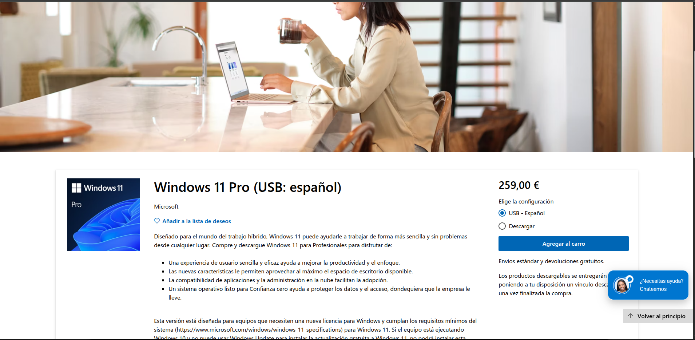
6. Què és una CAL?
Finalment, consultarem la pàgina de llicències d'accés de client de Microsoft. Una CAL (Client Access License) és una llicència que autoritza un usuari o dispositiu a accedir a determinats serveis de Microsoft, com ara els serveis d'un servidor Windows. Les CAL no són el mateix que una llicència del sistema operatiu d'escriptori.
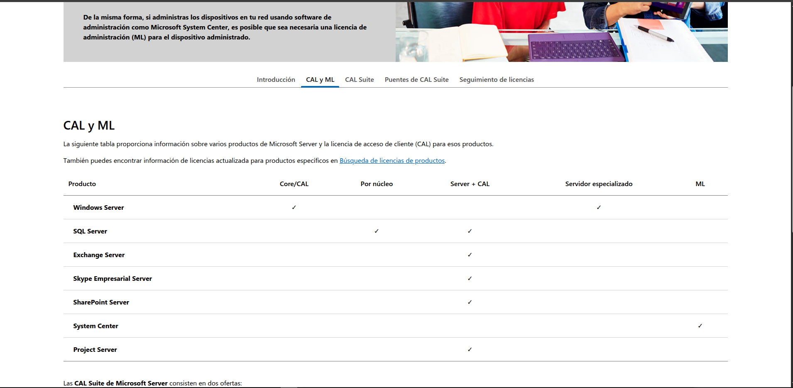
APARTAT 03
Comandes bàsiques
En aquest apartat utilitzarem les ordres bàsiques del símbol del sistema (CMD) per navegar entre directoris, crear carpetes i fitxers, copiar i moure elements, canviar-ne el nom i eliminar fitxers.
1. Accedir a l'escriptori i crear una carpeta
Primer, entrarem a l'escriptori amb cd Desktop. Després, crearem una carpeta anomenada practica amb mkdir practica i hi entrarem amb cd practica.
cd Desktop
mkdir practica
cd practica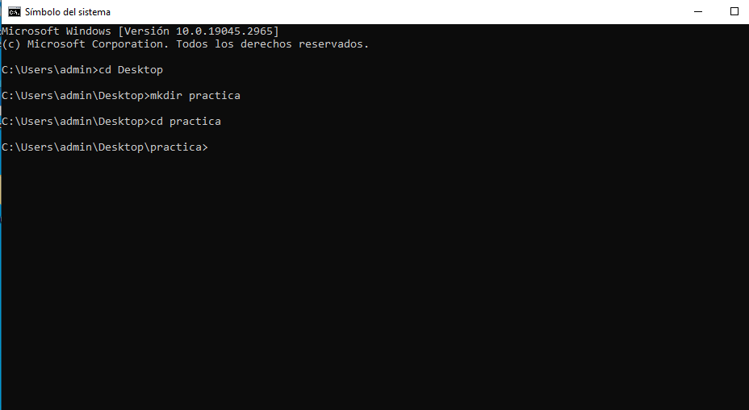
2. Crear un fitxer i comprovar que existeix
Crearem el fitxer de text nota.txt amb el contingut «hola» mitjançant la comanda echo hola > nota.txt. Després, executarem dir per comprovar que el fitxer apareix al directori actual.
echo hola > nota.txt
dir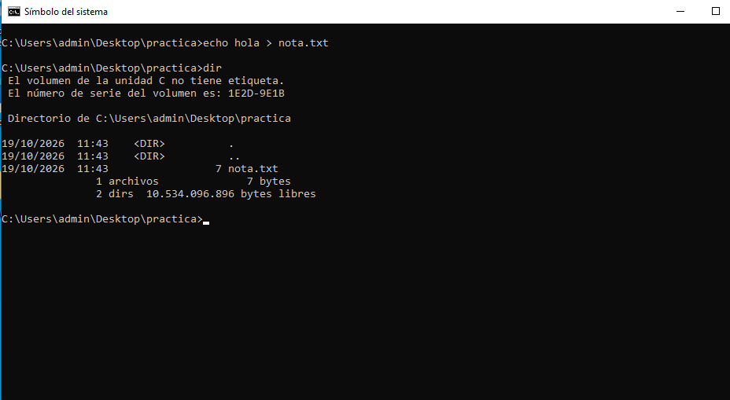
3. Copiar el fitxer
Farem una còpia de nota.txt amb la comanda copy nota.txt copia.txt. A continuació, utilitzarem dir per comprovar que ara hi ha el fitxer original i la còpia.
copy nota.txt copia.txt
dir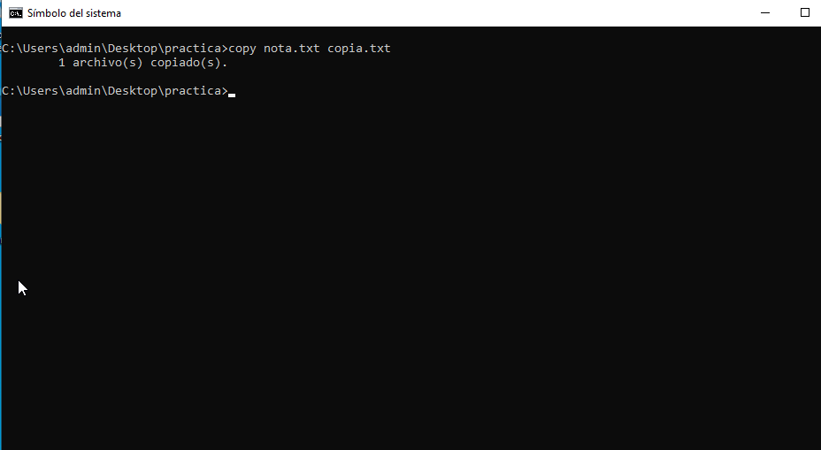
4. Crear una carpeta i moure-hi la còpia
Crearem la carpeta arxiu amb mkdir arxiu. Tot seguit, hi mourem el fitxer copiat amb move copia.txt arxiu.
mkdir arxiu
move copia.txt arxiu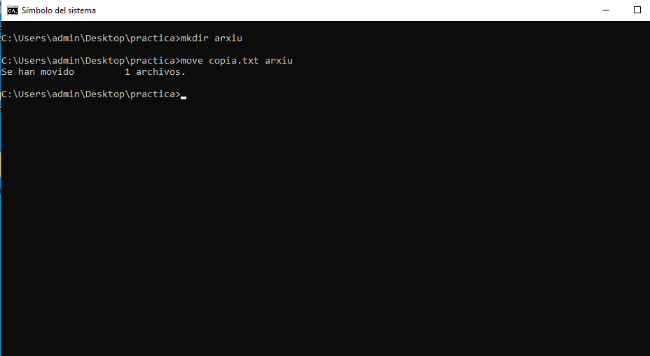
5. Canviar el nom d'un fitxer i d'una carpeta
Canviarem el nom del fitxer nota.txt a notes.txt amb ren nota.txt notes.txt. Després, canviarem el nom de la carpeta arxiu a backup amb ren arxiu backup. Amb dir comprovarem els canvis.
ren nota.txt notes.txt
ren arxiu backup
dir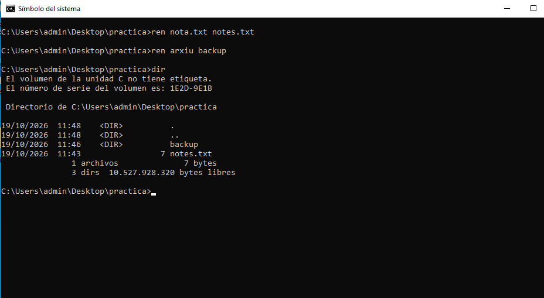
6. Entrar a la carpeta, consultar-ne el contingut i sortir-ne
Entrarem a la carpeta backup amb cd backup. Amb dir comprovarem que conté el fitxer mogut anteriorment. Finalment, executarem cd .. per tornar al directori pare.
cd backup
dir
cd ..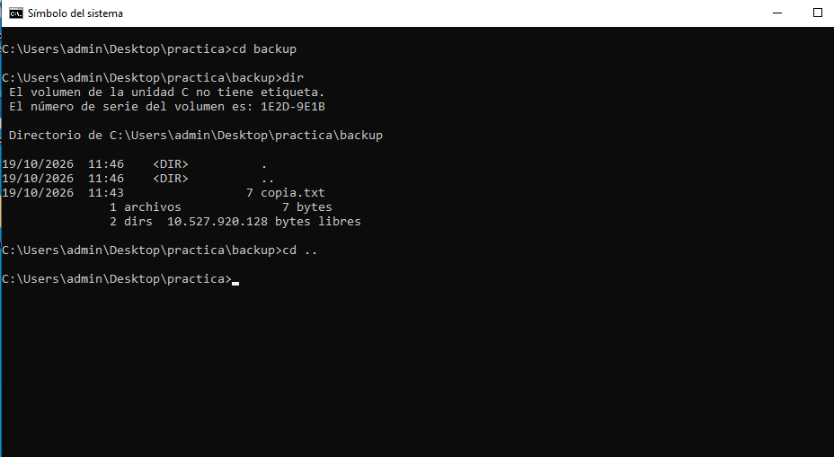
7. Mostrar l'estructura de directoris
Executarem tree /f per mostrar l'arbre de carpetes i fitxers del directori actual. L'opció /f fa que també es mostrin els noms dels fitxers.
tree /f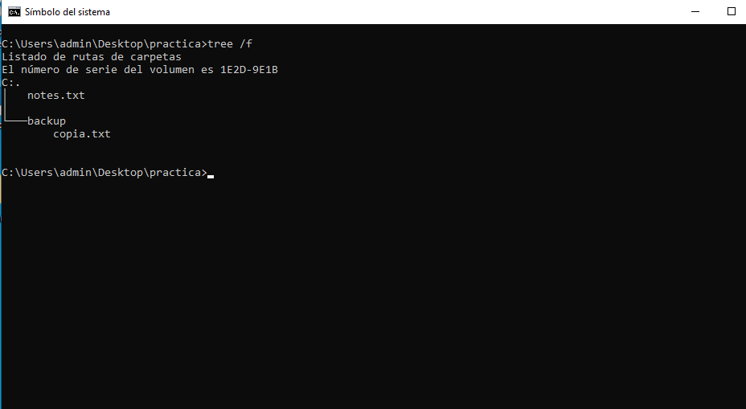
8. Eliminar un fitxer i comprovar-ho
Per acabar, eliminarem el fitxer notes.txt amb del notes.txt. Després, executarem dir per comprovar que el fitxer ja no apareix al directori actual.
del notes.txt
dir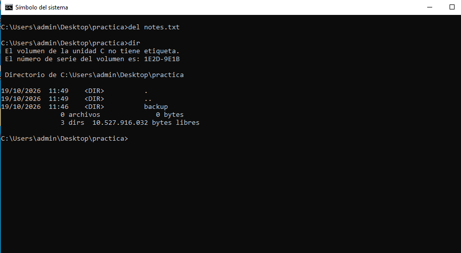
APARTAT 04
Aplicacions i punts de restauració
1. Activar la protecció del sistema
Primer, cercarem «Crear un punt de restauració» al menú Inici. A la finestra de propietats del sistema, seleccionarem el disc C: i entrarem a «Configura» per activar-ne la protecció del sistema.
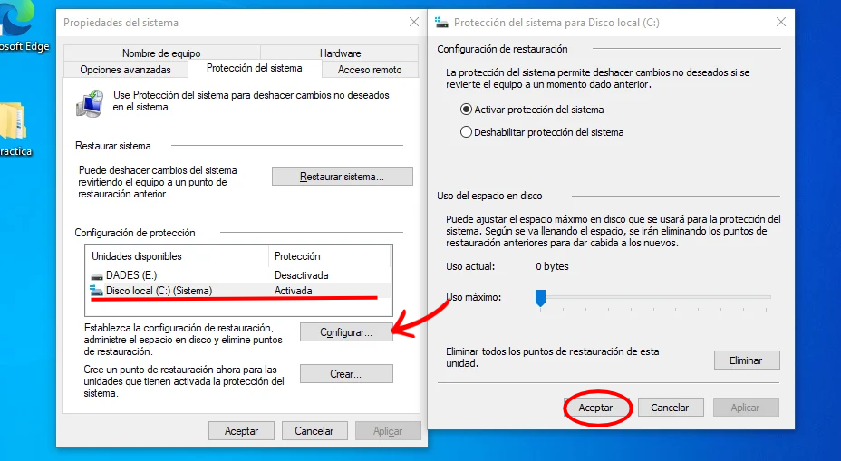
2. Crear un punt de restauració
Un cop activada la protecció, farem clic a «Crea» per generar un punt de restauració. Com a descripció, hi escriurem «Abans de Chrome», ja que el punt es crearà abans d'instal·lar el navegador.
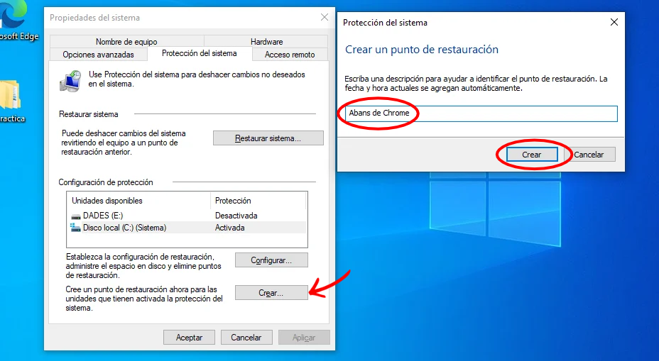
3. Descarregar i instal·lar Google Chrome
Després, accedirem a la pàgina oficial de Google Chrome, descarregarem l'instal·lador i l'executarem per instal·lar el navegador a Windows.
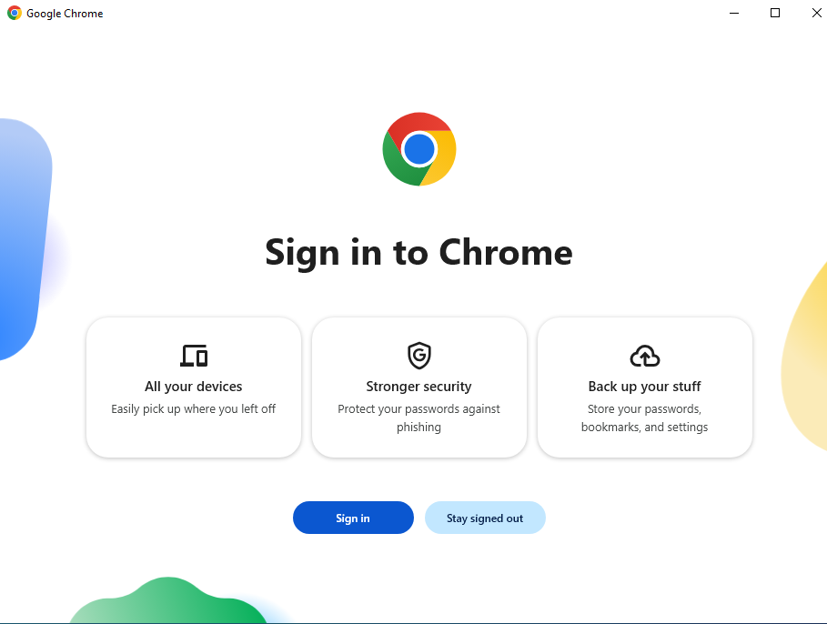
4. Obrir la restauració del sistema
Un cop instal·lat Chrome, tornarem a l'eina de recuperació i seleccionarem «Restaurar sistema» per iniciar l'assistent de restauració.
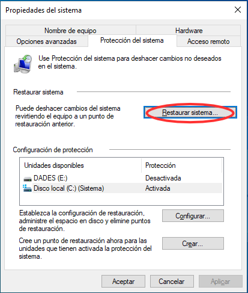
5. Seleccionar el punt i detectar els programes afectats
A l'assistent, seleccionarem el punt de restauració que hem creat anteriorment. Abans de continuar, farem clic a «Detecta els programes afectats» per veure quines aplicacions i controladors poden quedar afectats pel procés.
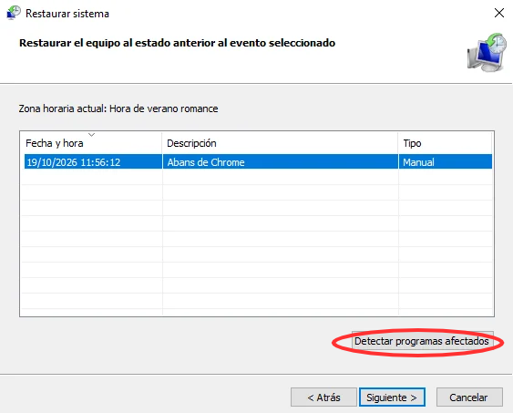
6. Comprovar els programes afectats
En el nostre cas, la llista indica que Google Chrome es veurà afectat per la restauració. Això permet comprovar que l'aplicació s'ha instal·lat després de crear el punt de restauració.
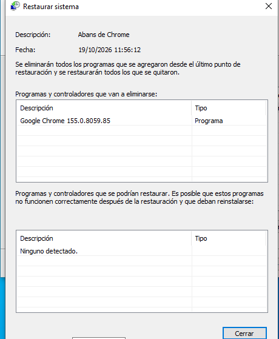
7. Iniciar la restauració
Després de revisar la informació, confirmarem la restauració. Windows iniciarà el procés i reiniciarà l'ordinador virtual. No apagarem la màquina mentre s'estigui duent a terme la restauració.
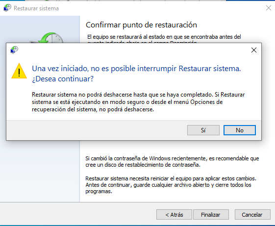
8. Comprovar el resultat
Quan Windows s'hagi reiniciat, comprovarem si Google Chrome continua instal·lat. Com que el punt de restauració s'havia creat abans d'instal·lar-lo, l'aplicació hauria de deixar d'estar disponible si la restauració s'ha completat correctament.
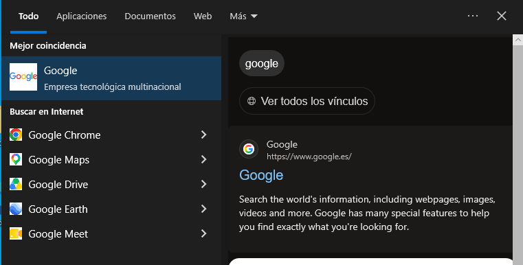
APARTAT 05
Xarxa
1. Consultar la configuració de xarxa
En primer lloc, obrirem el símbol del sistema (CMD) i executarem ipconfig. Aquesta comanda mostra la configuració TCP/IP de l'ordinador, com ara l'adreça IPv4, la màscara de subxarxa i la passarel·la predeterminada.
ipconfig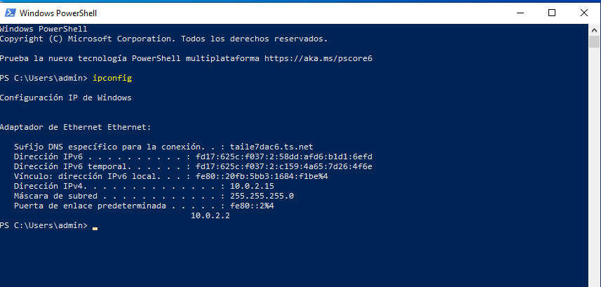
2. Comprovar la connexió mitjançant un nom de domini
A continuació, farem un ping a google.com per comprovar si l'ordinador pot resoldre el nom de domini i rebre respostes del servidor de destinació.
ping google.com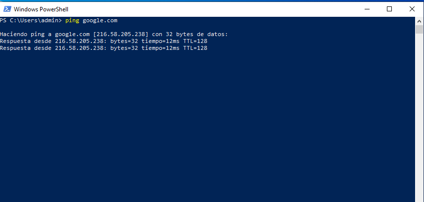
3. Comprovar la connexió amb una adreça IP
Després, enviarem paquets a l'adreça IP pública 8.8.8.8, associada al servei DNS públic de Google. Aquesta prova permet comprovar la connectivitat IP sense dependre de la resolució d'un nom de domini.
ping 8.8.8.8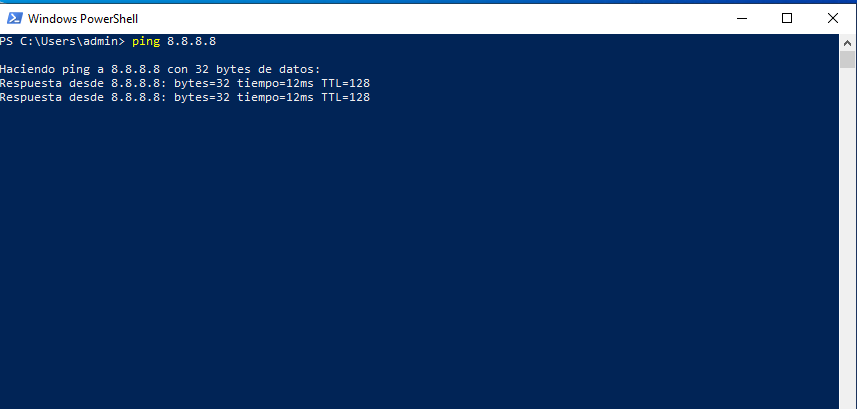
4. Desconnectar l'adaptador de xarxa
Per comprovar el comportament del sistema sense connexió, apagarem el cable de xarxa virtual des de la configuració de VirtualBox. Això desconnectarà la màquina virtual de la xarxa.
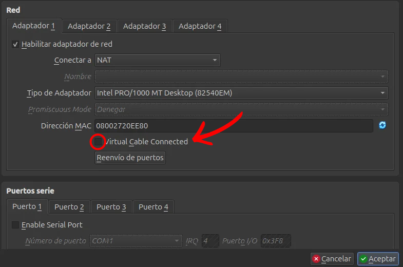
5. Repetir les proves sense connexió
Amb l'adaptador desconnectat, repetirem les ordres anteriors: ipconfig, ping google.com i ping 8.8.8.8. Compararem els resultats amb els obtinguts quan la connexió estava activa.
ipconfig
ping google.com
ping 8.8.8.8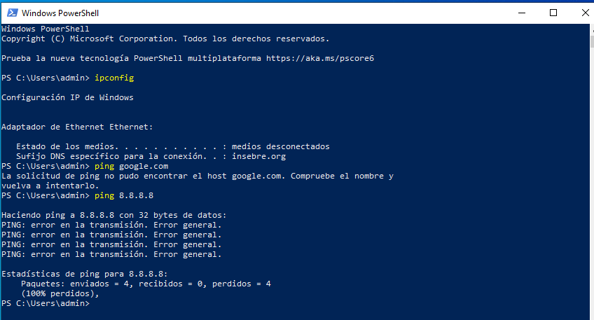
6. Tornar a connectar la xarxa i seleccionar el mode pont
Tornarem a habilitar el cable de xarxa virtual. Després, a la configuració de VirtualBox, canviarem el tipus de connexió de l'adaptador a «Adaptador pont». Aquest mode connecta la màquina virtual a la xarxa com si fos un dispositiu independent, subjecte a la configuració de la xarxa física.
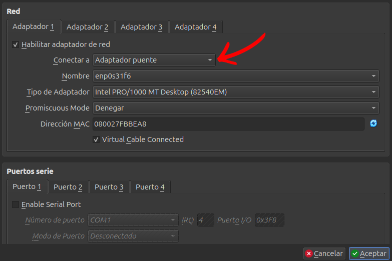
7. Repetir les proves amb l'adaptador pont
Un cop iniciat Windows amb la nova configuració, tornarem a executar ipconfig i les dues ordres ping. Així podrem observar la configuració IP assignada en mode pont i comprovar si hi ha connectivitat.
ipconfig
ping google.com
ping 8.8.8.8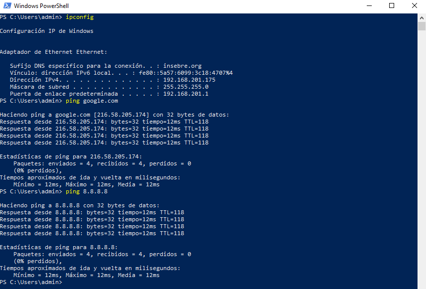
8. Obrir les propietats de la connexió
Per canviar el DNS, obrirem la finestra Executar amb Windows + R i hi escriurem ncpa.cpl. A la finestra de connexions de xarxa, farem clic amb el botó dret sobre la connexió activa i seleccionarem «Propietats».
ncpa.cpl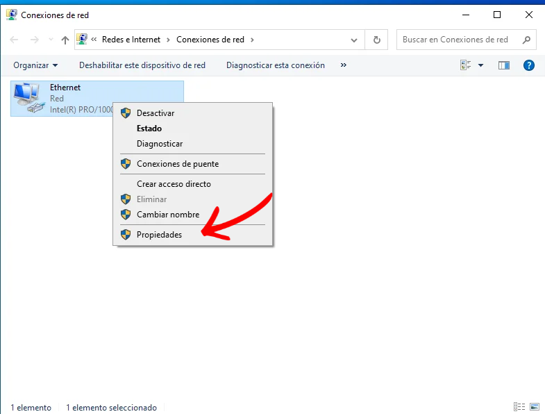
9. Configurar manualment el servidor DNS
A les propietats de la connexió, farem doble clic a «Protocol d'Internet versió 4 (TCP/IPv4)». Seleccionarem l'opció per utilitzar adreces de servidor DNS específiques i introduirem 1.2.3.4 com a servidor DNS preferit. Desarem els canvis prement «D'acord».
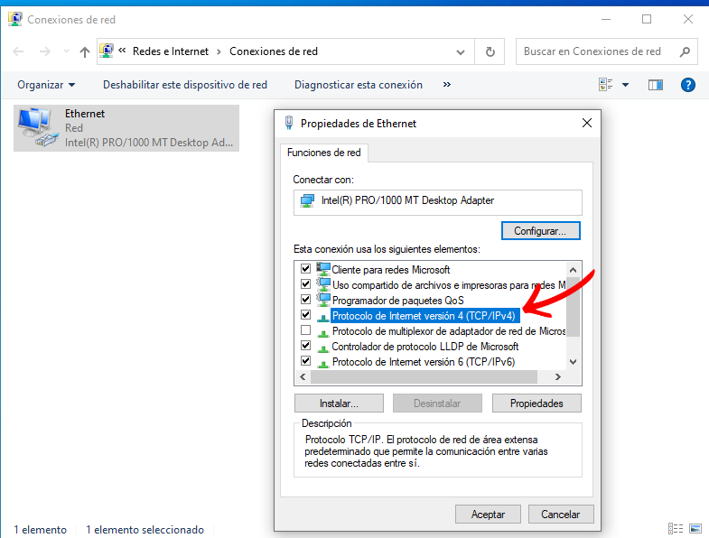
10. Repetir les proves de connectivitat
Per acabar, tornarem a executar les dues ordres ping. La prova amb ping 8.8.8.8 comprova la connectivitat IP, mentre que ping google.com també depèn que el nom de domini es resolgui correctament. L'adreça 1.2.3.4 s'ha configurat com a exercici i no necessàriament és un servidor DNS operatiu; per tant, la resolució de noms pot fallar.
ping google.com
ping 8.8.8.8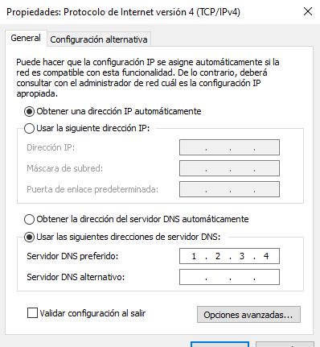